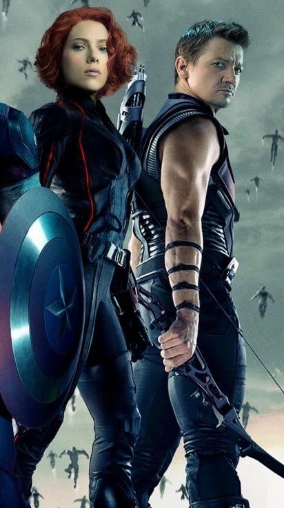

| Clint and Natasha are best friends. However, at the start of their relationship, Clint Barton (as Hawkeye) was sent to eliminate Natasha, but instead, Barton saw her skills and recommended her recruitment. The two began an everlasting partnership, with Barton affectionately calling her "Nat.During The Avengers, Barton was taken by Loki Laufeyson, while being under his mind control. When she heard he was in danger, she immediately beat up her interogators. Loki later saw their relationship as friends, and even threatened to have Hawkeye kill her and when he would awake in horror, Loki would then kill Hawkeye. Natasha was forced to fight him, but she was able to knock him out and they both quickly apologized.
It is revealed that Natasha is close to Clint, his wife and their three children.
During the Civil War, Clint and Natasha's relationship was briefly strained because Nat joined the Iron Man side while Barton joined Captain America's team. In Avengers: Endgame, Natasha sacrifices herself on Vormir for Clint not only because she knew her own death would give him the Soul Stone to help undo the Snap but because she knew his family needed him." |
 |